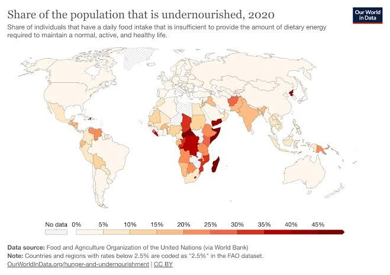
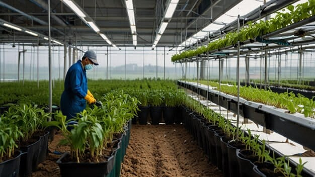
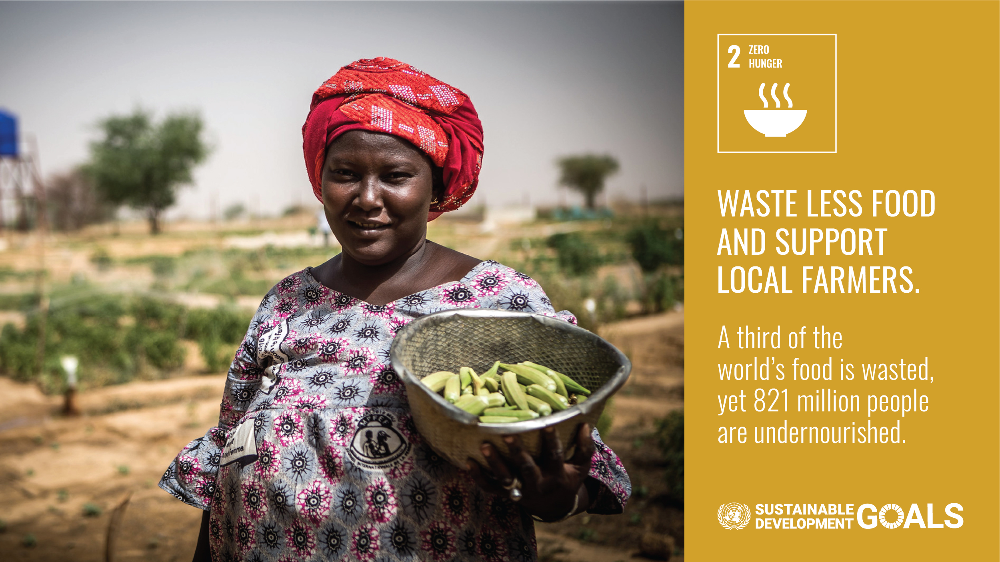

Hunger:
Solving Humanity's Greatest Endeavor
Sustainable Development Goals 2 : Zero Hunger
Made by the Empowerment Technology Group 8
Allason, Bait, Dailisan, Ecoy, Tajones, Tuazon, Valera
Sustainable Development Goals 2 : Zero Hunger
Made by the Empowerment Technology Group 8
Allason, Bait, Dailisan, Ecoy, Tajones, Tuazon, Valera

SDG 2 is a global initiative that seeks to address the pressing issue of hunger and malnutrition worldwide.
It recognizes that access to sufficient, safe, and nutritious food is a fundamental human right and a prerequisite
for sustainable development. The goal emphasizes the importance of ensuring that all people, especially vulnerable
populations, have access to adequate food throughout the year. This goal has 8 specific targets, which are:
© Hippy In A Suit.

 © United Nations
© United Nations
 © World Bank SDG Atlas
© World Bank SDG Atlas
 © Food and Agriculture of the United Nations (FAO)
© Food and Agriculture of the United Nations (FAO)

© Food and Agriculture of the United Nations (FAO) © Rappler PH
© Rappler PH

One of the biggest obstacles for people to reaching SDG2 isn't just political and economic, it's a lack of solid research and data. Existing studies often focus on individual farms without connecting that data to larger regions , and not nearly enough attention has gone into how international supply chains or how much one area can offer to its people. Climate change only complicates things further, throwing off planting seasons and putting even more strain on land and water that were already limited to begin with. If the research does not improve and start solving problems more effectively, hunger will only continue to grow(Sporchia et al., 2024).

Solving hunger doesn't mean leaving people to struggle on their own, it means governments actually stepping in and helping local farmers, make fairer food prices, and contribute fundings to struggling communities, and not just policy papers. Cutting down food waste, improving how food gets distributed, and making locally produced foods more affordable to help one another.

© 2026. Jabe Niccolo C. Tajones. Made with HTML, CSS, and JS.
{kind=link}